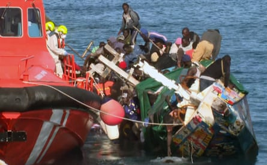
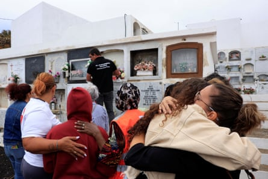
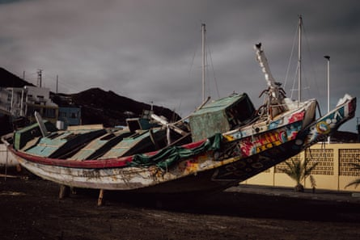
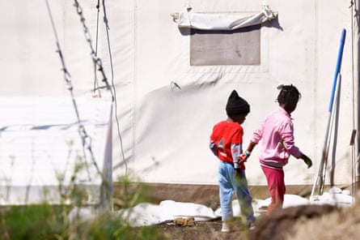

T he four women and three girls were just metres from the pier in the port of La Restinga in El Hierro, one of Spain’s Canary Islands, when they drowned on 28 May. Rescue teams had begun disembarking the first people early that morning when the vessel capsized.
Photos and videos of the chaotic scenes show the boat partially submerged and completely overturned, with several people struggling to swim around it and others trying to climb on to the wrecked boat. Underneath, about 15 women and girls were trapped and fighting to get to the surface. Seven would not make it.
This grab from a video shows the boat capsizing while people were disembarking.Photograph: Television Canaria/AFP/Getty Images
After a 10-day journey from the west coast of Africa , 145 people who had been on the boat made it ashore, but the seven women and children were buried in three cemeteries on El Hierro.
The deaths shocked an island that has quickly become a hotspot of Europe’s migration crisis . As the EU seeks to crack down on routes across the Mediterranean, more people have resorted to crossing the Atlantic to reach the Canary Islands – one of the most dangerous crossings into Europe. More than 20,000 migrants arrived in El Hierro in 2024, according to the Red Cross – almost double the island’s population.
The incident also shone a light on the large numbers of women and girls now attempting the long and dangerous migration route from Africa – they made up almost half of the passengers on the capsized boat.
The funeral of one of the seven women and children drowned in the tragedy.Photograph: Borja Suárez/Reuters
Since 2021, nearly 15% of irregular entries to the Canary Islands have been women, according to data collected by the Spanish Commission for Refugee Aid (Cear). Most of them are coming from the Sahel region, according to the UN’s refugee agency, which says escalating conflicts have forcibly displaced millions of people from Burkina Faso, Niger and Mali.
Human rights groups say increasing numbers of women are now visible on migration routes from Africa, driven by the familiar issues of armed conflicts and poverty, but also unique problems such as escaping gender-based violence and forced marriage. “Women are becoming the main actors in their own migration process, whereas in the past it was usually the men who migrated first and the women joined later,” says Juan Carlos Lorenzo, a coordinator at Cear.
Madeleine*, who was travelling with her five-year-old niece on the capsized boat, has told the Guardian she decided to leave after her husband abandoned her. She was criticised by his family when she began looking for work. “They were saying I was seeing other men, which wasn’t true. I couldn’t take it any more and made the decision.”
Many women and children were below deck in compartments usually used to store fish.Photograph: Anna Surinyach
At the time she was looking after her niece and decided it would be better for her to come too. “When her mother died, the family wanted to take the girl to undergo genital mutilation, but I refused to accept it. When I said no, they started to fight a lot against me. I couldn’t leave my niece there, so I brought her with me.”
Madeleine says she was on the deck of the boat when it capsized. Both of them fell into the water, where Madeleine says she initially tried to hold her niece tightly, but had to let go because she couldn’t keep her own head above water. “I started screaming and crying. I had the girl in my arms, but we were both sinking. I let her go.” Ultimately, both were rescued.
The little girl was taken alone to a hospital in Tenerife after swallowing too much water, says Madeleine, who was separated from her while she was identified at the police camp where migrants are detained and processed in El Hierro. They were reunited three days later.
Other women from the boat were wary of going into details about why they had left Africa. Sira*, who was one of the women trapped under the boat when it capsized, says she left Guinea to help her family and give her two daughters aged four and seven more opportunities. She says she travelled inside enclosed compartments within the boat, typically used to store fish but repurposed for women and children during the voyage. When the boat capsized, she says, many women were struggling to breathe.
There were nearly 30 children on board the boat.Photograph: Borja Suárez/Reuters
“Inside, there was a lot of water. We held on to ropes to lift our heads and breathe. My daughters were on the upper part of the boat; they were no longer with me at the bottom because [the rescue teams] had asked to disembark the children first. They fell into the water, but I stayed inside,” says Sira.
Sira’s four-year-old daughter was one of the children who drowned.
Initially, the rescue teams focused on helping those who had fallen into the sea, unable to see the people still trapped beneath the boat, as shown in footage broadcast by several television channels at the time. But after the boat flipped over again, several local residents jumped in to assist, pulling one person after another to safety. Among the arms that reached out to be rescued were Sira’s. “That’s when they rescued me,” she says.
* Names have been changed. Sira and her surviving daughter are now living in a shelter after being transferred to the neighbouring island of Tenerife
- Gabriela Sánchez is a reporter for elDiario.es